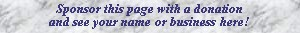

|
Cloches French? |  |
Mentioned only by Irwin, who describes it as �small metal bars, single stroke�. He refers to a tuned percussion stop in which the bars are struck by hammers, actuated by an electrical or pneumatic mechanism. The French word means �bells�. It is not clear how this stop differs from the Glockenspiel.
All known examples are listed below.
Cloches, Solo; Basilica del Santisimo Sacramento, Buenos Aires, Argentina; Mutin-Cavaillé-Coll 1912.
Cloches, Grand Orgue, Solo Expressif, Pedale; First Park Congregational Church, Grand Rapids, Michigan, USA; Moller 1988.
Cloches, Grand Orgue; First Presbyterian Church, Alton, Illinois, USA; Dial 1991.
Cloches, Great; St. John Lutheran Church, Knoxville, Tennessee, USA; Berghaus 1992.
Cloches, Grand Orgue; St. John's Episcopal Church, Hartford, Connecticut, USA; Austin 1996.
Cloches, Grand Orgue, Choeur, Pedale; Broadway Baptist Church, Fort Worth, Texas, USA; Casavant 1996.
|
Original site compiled by Edward L. Stauff. For educational use only. Cloches.html - Last updated 7 March 2002. |
Home Full Index |